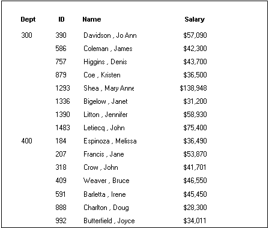
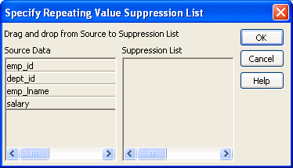

You can use an ORDER BY clause in the SQL SELECT statement for the DataWindow object to sort the data that is retrieved from the database. If you do this, the DBMS itself does the sorting and the rows are brought into PowerBuilder already sorted.
However, you might want to sort the rows after they are retrieved. For example, you might want to:
 To sort the rows:
To sort the rows:
Select Rows>Sort from the menu bar.

Drag to the Columns box the columns on which you want to sort the rows, and specify whether you want to sort in ascending or descending order.
The order of the columns determines the precedence of the sort. To reorder the columns, drag them up or down in the list. To delete a column from the sort columns list, drag the column outside the dialog box.
You can also specify expressions to sort on: for example, if you have two columns, Revenues and Expenses, you can sort on the expression Revenues – Expenses.
To specify an expression to sort on, double-click a column name in the Columns box, modify the expression in the Modify Expression dialog box, and click OK.
You return to the Specify Sort Columns dialog box with the expression displayed.
 If you change your mind You can remove a column or expression from the sorting specification
by simply dragging it and releasing it outside the Columns box.
If you change your mind You can remove a column or expression from the sorting specification
by simply dragging it and releasing it outside the Columns box.
Click OK when you have specified all the sort columns and expressions.
When you sort on a column, there might be several rows with the same value in one column. You can choose to suppress the repeating values in that column.
When you suppress a repeating value, the value displays at the start of each new page and, if you are using groups, each time a value changes in a higher group.
For example, if you have sorted employees by department ID, you can suppress all but the first occurrence of each department ID in the DataWindow object:

 To suppress repeating values:
To suppress repeating values:
Select Rows>Suppress Repeating Values from the menu bar.
The Specify Repeating Value Suppression List dialog box displays:

Drag the columns whose repeated values you want to suppress from the Source Data box to the Suppression List box, and click OK.
 If you change your mind You can remove a column from the suppression list simply by
dragging it and releasing it outside the Suppression List box.
If you change your mind You can remove a column from the suppression list simply by
dragging it and releasing it outside the Suppression List box.